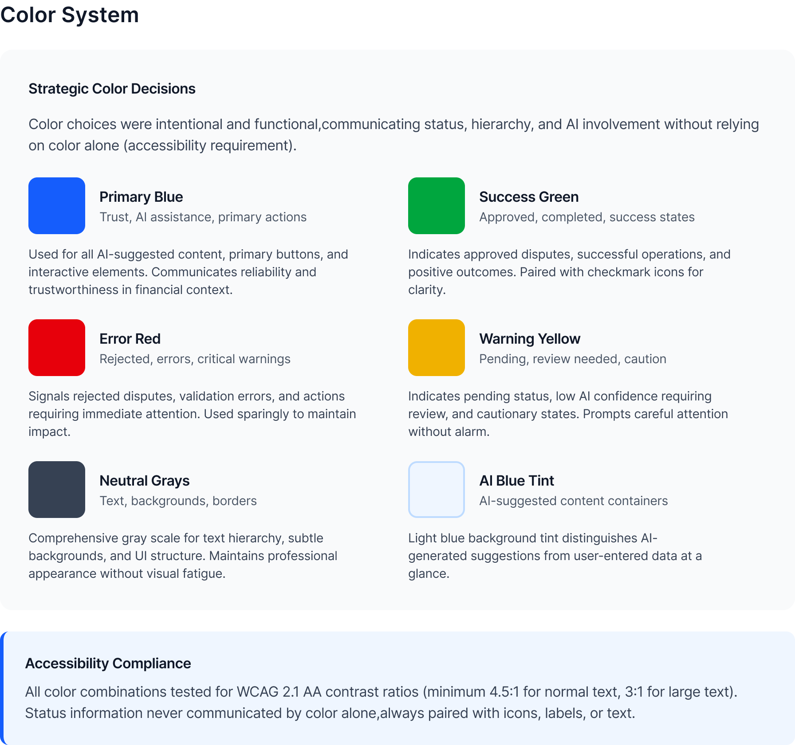
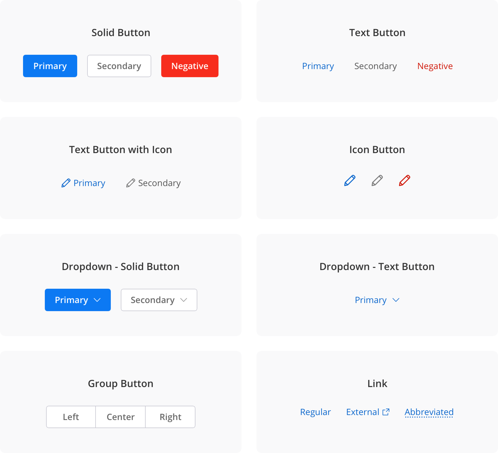
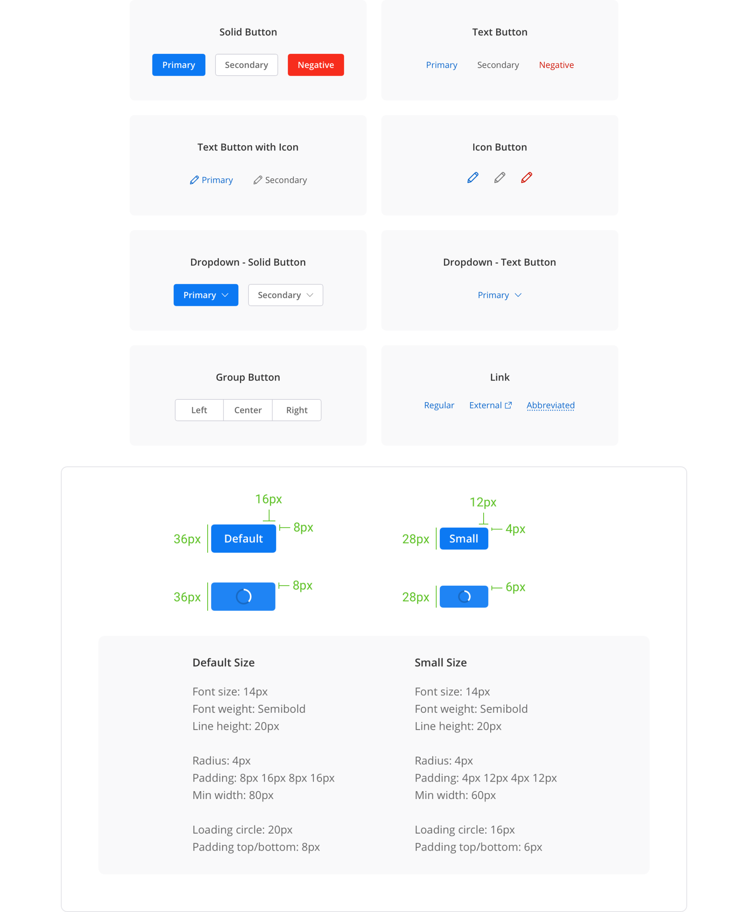

Project overview
My role
I was the sole designer. Before touching a single new screen, I needed to build the foundation the entire platform would run on. That meant auditing what existed, defining the system architecture, building components from scratch, and getting a team that had never worked with a designer to actually use it.
The impact
65% faster design output. 40% faster development. 67% fewer post-launch bugs. WCAG 2.1 AA compliance from day one. And a satisfaction score of 4.6/5, up from 2.8 in the legacy system.
A design system isn't a component library. It's a set of decisions made once, so you never have to make them again under deadline pressure.
What we shipped
KEY METRICS FROM THE DESIGN SYSTEM IMPLEMENTATION
20 years of UI, zero designers
The platform had been extended by rotating dev teams for 20 years with no designer involved. The result was a UI that looked and behaved differently across almost every workflow area.
What the audit found:
The problem wasn't just visual
In a dispute management platform, inconsistency has real consequences. Status colors that contradict themselves affect how banks classify cases. Broken form accessibility means compliance risk. And without a shared system, every new feature required designers and developers to start from scratch.
Tokens first. Everything else follows.
Before building a single component, I established the token layer — the design decisions that flow through every element in the system. Tokens are what make a system resilient: one variable update instead of hundreds of component edits when things inevitably change.

45+ components covering 12+ workflows
Every component was built for the realities of a financial data platform — data-dense tables, multi-state forms, accessibility-first interaction patterns, and AI-transparency elements that had no off-the-shelf equivalent.
Forms & inputs
Text fields, selects, date-pickers, radio groups, and checkboxes — all with focus states, error states, and ARIA labels baked in from day one.
Data tables
Sortable, filterable, with bulk-action selection, sticky headers, and status-badge integration — the backbone of every queue and list view.
Confidence badges
High / Medium / Low labels replacing opaque percentages — designed so agents see why the system thinks something, not just a score.
Alerts & notifications
Consistent patterns for success, error, warning, and info — icons reinforce colour, ARIA roles announce type to screen readers.


Making the system easier to use than not using it
No Storybook. No design token pipeline. Developers received Figma specs. Some had long habits of writing their own CSS. Getting adoption without mandating it was the critical challenge.
Clear annotations on every component
Figma annotation layers made the spec unambiguous. Exact spacing values, CSS property names, state conditions — the ask to developers was minimal.
One-on-ones with senior devs
I involved them in naming decisions early. Two became informal advocates who flagged off-system work in code review — without me asking.
Acceptance criteria = delivery requirement
WCAG compliance went into sprint acceptance criteria. I framed it as preventing future rework, not adding new work. That reframe changed the conversation.
Before / After
What made this hard
Building a design system is a political project as much as a design project. The system has to be easier to use than not using it, or it won't be used.
Getting developer adoption without mandating it
No Storybook, no token pipeline. I made the system easier to use than not: clear annotations, one-on-ones with senior devs, involving them in naming decisions. Two became informal advocates who flagged off-system work in code review.
WCAG compliance in a legacy codebase
When I introduced accessibility requirements, some developers saw it as scope creep. I reframed it: we're preventing future rework, not adding new work. I ran contrast checks, wrote specific WCAG criteria per component, provided exact CSS values. The ask to developers was small.
Introducing design practice to a team that had never worked with a designer
No design reviews, no shared Figma workspace, no established process. I made the process lightweight: async Figma comments instead of scheduled reviews, acceptance criteria written in developer language. The system had to fit the team's workflow or it wouldn't get used.
Results
Measurable impact across design velocity, development efficiency, and product quality.
What I learned
Tokens first, always
They're what made the system resilient to the changes that always come. One variable update instead of hundreds of component edits. I'd do this even earlier on the next project.
Ship V1, then improve it
Perfect doesn't get used. Components that ship and get used get better through real feedback. That feedback made the system better than any amount of upfront planning would have.
Adoption is a design problem
The best-designed system fails if no one uses it. I should have documented the "why" behind decisions more explicitly — future designers would have found that more useful than more components.
Engineering input earlier
Some component decisions I made unilaterally were harder to implement than necessary. A conversation with the tech lead at the token-naming stage would have saved two sprint cycles.